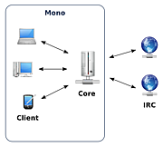
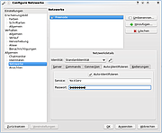
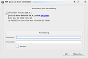
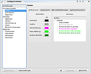
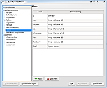
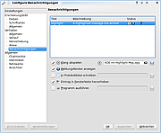
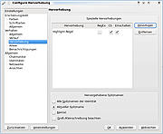

Quassel
Dieser Artikel wurde für die folgenden Ubuntu-Versionen getestet:
Ubuntu 14.04 Trusty Tahr
Zum Verständnis dieses Artikels sind folgende Seiten hilfreich:
Quassel  ist ein moderner, plattformunabhängiger IRC-Client, der auf dem Qt4-Framework basiert und ein Client-Server-Modell zur Verfügung stellt. Unter der Desktopumgebung KDE galt Quassel als potentieller Nachfolger von Konversation und wurde erstmalig in Kubuntu 9.04 standardmäßig installiert. Zwischenzeitlich ist Kubuntu aber wieder zu Konversion zurückgekehrt.
ist ein moderner, plattformunabhängiger IRC-Client, der auf dem Qt4-Framework basiert und ein Client-Server-Modell zur Verfügung stellt. Unter der Desktopumgebung KDE galt Quassel als potentieller Nachfolger von Konversation und wurde erstmalig in Kubuntu 9.04 standardmäßig installiert. Zwischenzeitlich ist Kubuntu aber wieder zu Konversion zurückgekehrt.
Installation¶
Um Quassel verwenden zu können, muss man einfach folgendes Paket installieren [1]:
quassel (main)
 mit apturl
mit apturl
Paketliste zum Kopieren:
sudo apt-get install quassel
sudo aptitude install quassel
Das Programm findet sich dann unter "Anwendungen -> Internet -> Quassel IRC" [4]
Für die Nutzung des Client-Server-Modus gibt es die folgenden zwei Pakete:
quassel-core (universe, Paket für den "Core", dem zentralen Rechner im Netzwerk)
quassel-client (universe, Paket für den mit dem "Core" verbundenen Client)
mit apturl
Paketliste zum Kopieren:
sudo apt-get install quassel-core quassel-client
sudo aptitude install quassel-core quassel-client
Über das Client-Server-Prinzip¶
| Client-Server-Prinzip |
|  |
Im Client-Server-Modus nutzt man einen zentralen Rechner als "Core", welcher wie ein Bouncer permanent online, also mit dem eigentlichen IRC-Server verbunden ist. Der Core-Rechner speichert alle vorgenommenen Einstellungen, die dann bequem über einen der Clients abgerufen werden können. Dies spart Ressourcen und ermöglicht es unter anderem, das Geschehen in unzähligen IRC-Channels so weit zurück zu verfolgen, wie man möchte.
Einrichtung¶
Traditionelle IRC-Nutzung¶
| Auto-Identifizierung |
|  |
IRC-Netzwerke wie Freenode, welches in der aktuellen Version von quassel standardmäßig vorkonfiguriert ist, lassen sich unter "Datei -> Netzwerke" hinzufügen bzw. entfernen. Anschließend muss man lediglich die Standardidentität, also den persönlichen Spitznamen, unter "Einstellungen -> Quassel konfigurieren... -> Identitäten" bearbeiten.
Für eine automatische Identifizierung navigiert man zum Menüpunkt "Netzwerke", klickt auf den Reiter "Auto-Identifizieren" und gibt die persönlichen Informationen ein. Möchte man zusätzlich beim Start automatisch verschiedene Channels betreten, wählt man unter "Netzwerke" den Reiter "Commands" aus und gibt beispielsweise folgendes ein:
/join #ubuntuusers /join #ubuntu-de /join #kubuntu-de
Client-Server-Modus¶
Möchte man sich im Rahmen des Client-Server-Prinzips auf einem quassel-client eine Verbindung zum quassel-core herstellen, startet man das Programm nach den oben erklärten Installationen mit folgendem Befehl [3]:
quassel-client
Es öffnet sich beim ersten Start ein Konfigurationsdialog, der dazu auffordert, ein Remote-Konto zu erstellen, dessen Details mit einem Klick auf "Hinzufügen..." definiert werden können. Als Rechnernamen trägt man nun die IP-Adresse oder den Hostnamen des zum "Core" bestimmten Rechners ein. Als nächstes kann man sich für oder gegen die Verwendung von SSL und/oder eines Proxies entscheiden.
| Nutzerdaten eingeben |
|  |
Hat man die vorgenommenen Konfigurationen mit einem Klick auf "OK" bestätigt, ist es sinnvoll, ein Häkchen bei "Diesen Account immer benutzen" zu setzen. Nach einem weiteren Klick auf "OK" wird die Verbindung zwischen "Core" und "Client" hergestellt. Abhängig davon, ob es sich um eine erstmalige Nutzung des Rechners als "Core" handelt, ist es notwendig, die Administrator-Daten im erscheinenden Fenster neu zu bestimmen. Auch hier erspart ein Häkchen bei "Merken" das ständige Eingeben der Daten bei den nächsten Verbindungen.
Achtung!
Bei der Wahl der Administratordaten ist Sorgfalt geboten, da sie nachträglich nicht änderbar sind.
Nützliche Funktionen¶
| Erscheinungsbild |
|  |
| Aliase |
|  |
| Benachrichtigungen |
|  |
| Hervorhebung |
|  |
Erscheinungsbild anpassen¶
Im Einstellungsmenü hat man unter "Erscheinungsbild" die Möglichkeit, die etwas gewöhnungsbedürftigen Standardfarben und -schriften anzupassen. Darüber hinaus ist auch der Client-Stil modifizierbar, sodass man beispielsweise statt Oxygen den Stil Cleanlooks auswählen kann.
Chatmonitor-Anordnung¶
Da das Programmfenster bei einer großen Zahl an Channels schnell unübersichtlich wird, haben die Entwickler eine Funktion eingebaut, mit der sich der Chatmonitor anpassen lässt. Zu finden ist dieses Feature in den Einstellungen unter "Allgemein -> Chatmonitor".
Verlaufseinstellungen¶
Unter "Verhalten -> Verlauf" bietet das Dropdown-Menü verschiedene Optionen, die Größe des Verlaufs nicht ausufern zu lassen. Gerade bei einer Nutzung des Client-Server-Prinzips hilft diese Funktion, die Übersicht zu behalten.
Vorschau von Weblinks¶
Lässt man den Mauszeiger ein paar Sekunden auf einem HTML-Link stehen, erzeugt Quassel eine Vorschau der verlinkten Webseite. Deaktivieren kann man dieses Feature unter "Erscheinungsbild -> Allgemein".
Aliase festlegen¶
Nicht nur im Terminal, auch während des IRC-Chats gibt es bestimmte Befehle, die man häufig verwendet. Um umständliches Eintippen derselben zu vermeiden, kann man Kurzformen definieren, die sich schneller schreiben lassen. Die Aliase finden sich im Einstellungsmenü unter "Verhalten -> Aliase".
Benachrichtigungen¶
Wie manche es bereits von KDE-Anwendungen wie Kopete her kennen, bietet auch Quassel umfangreiche Möglichkeiten, sich bei bestimmten Ereignissen grafisch oder akustisch benachrichtigen zu lassen. Neben dem Aufrufen von Meldungsfenstern oder Klängen lässt sich unter "Verhalten -> Benachrichtigungen" auch das Ausführen von Programmen einrichten.
Hervorhebung¶
Auch in virtuellen Unterhaltungen kommt es vor, dass man auf verschiedene Spitznamen hört. Damit bei jedem dieser Nicknames eine Hervorhebung angezeigt wird, kann man unter dem Menüpunkt Hervorhebung die gewünschten Namen eintragen.
Bekannte Probleme¶
Folgende fehlende Funktionen sind bereits bekannt und werden in den kommenden Versionen integriert:
Plugin-System nach dem Vorbild von Konversation
Multiuser-Unterstützung auf dem Quassel-Core
DCC-Chat, siehe Direct Client-to-Client
Dateiübertragungen
Eine Liste aller Fehlerberichte und Feature-Wünsche findet man hier .
- Erstellt mit Inyoka
-
 2004 – 2017 ubuntuusers.de • Einige Rechte vorbehalten
2004 – 2017 ubuntuusers.de • Einige Rechte vorbehalten
Lizenz • Kontakt • Datenschutz • Impressum • Serverstatus -
Serverhousing gespendet von